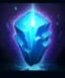
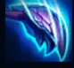
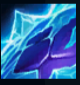
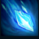
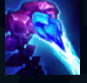

Skarner
| Skarner The Crystal VAnguard | |
|---|---|
| Release date | 09.08.2011 |
| Class | Diver |
| Positions | Jungle |
| Resource | Mana |
| Range type | Melee |
| Adaptive type | Physical |
| Base statistics | |||
| Health | 601 – 2132 | Mana | 325-1340 |
| Health regen. | 7 – 19.75 |
Mana regen. | 7.2-14.85 |
| Armor | 38 – 70 | Attack damage | 52 – 99.6 |
| Magic resist. | 32 – 38.5 | Crit. damage | 175% |
| Move. speed | 335 | Attack range | 125 |
Skarner este un scorpion imens de cristal dintr-o vale ascunsă a Shurimei. Face parte din rasa antică a brackernilor, care este cunoscută pentru înțelepciunea sa și legătura sa strânsă cu pământul. Sufletele celor din această rasă sunt contopite cu cristale ale vieții care cuprind gândurile și amintirile strămoșilor lor. În timpuri imemoriale, brackernii au intrat în hibernare pentru a evita să fie distruși de forțe magice, dar Skarner a fost trezit recent de o serie de evenimente îngrijorătoare. Fiind singurul brackern care a revenit la viață, încearcă să-și apere rasa de cei care îi vor răul. |  |
FRAGMENTE DE CRISTAL Prezența lui Skarner face să apară cristale în anumite locuri de pe hartă. Cristalele pot fi capturate de oricare dintre echipe, dacă un campion stă aproape de ele. În apropierea cristalelor deținute de echipa sa, Skarner primește viteză de mișcare, viteză de atac și regenerare crescută a manei |
||
|---|---|---|---|---|
 |
LOVITURA DE CRISTAL Skarner se repede cu ghearele asupra inamicilor din apropiere, provocându-le tuturor daune fizice și încărcându-se cu ''Energie cristalină'' pentru câteva secunde dacă lovește o unitate. Dacă folosește din nou ''Lovitura de cristal'' cât timp are ''Energie cristalină'', va provoca daune magice bonus. |
|||
 |
EXOSCHELET CRISTALIN Skarner câștigă un scut, iar viteza lui de mișcare crește cât timp scutul rezistă. |
|||
|  |
FRACTURĂ Skarner invocă o explozie de energie cristalină care le provoacă daune inamicilor loviți și îi încetinește. Dacă îi atacă apoi rapid cu atacuri de bază, îi amețește. |
|||
 |
STRĂPUNGERE Skarner suprimă un campion inamic și îi provoacă daune. Între timp, Skarner se poate mișca liber și își târăște victima neajutorată după el. La terminarea efectului, ținta lui Skarner va suferi daune suplimentare. |